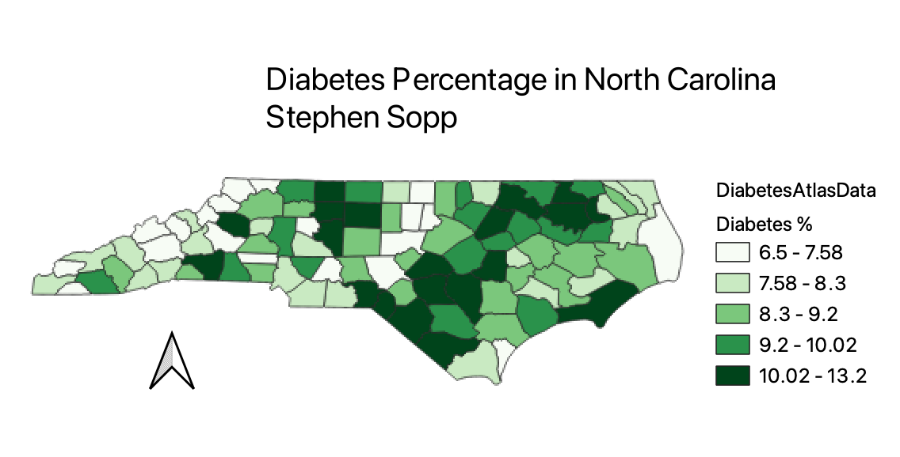

Homework 7

CSV Data
GeoJSON data
This map is a representation of North Carolina's diabetes percentage throughout the state. The darker shade of green indicated higher percentages. I found it interesting where the high concentration areas were. Further research could be done to discover the socioeconomic outlooks of these regions.